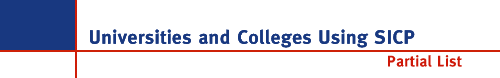

 See also the more general list of Schools Using
Scheme maintained by Schemers, Inc.
See also the more general list of Schools Using
Scheme maintained by Schemers, Inc.
- Aarhus University · Denmark
- Ben Gurion University · Israel
- Bates College · USA
- Boise State University · USA
- Brandeis University · USA
- Chalmers University of Technology · Sweden
- Colgate University · USA
- Columbia University · USA
- Contra Costa College · USA
- Copenhagen Business School · Denmark
- Cornell University · USA
- Delft University of Technology · The Netherlands
- Dortmund University · Germany
- Drexel University · USA
- East Stroudsburg University · USA
- Franklin & Marshall College · USA
- Georgia Institute of Technology · USA
- Illinois Institute of Technology · USA
- Imperial College, London · UK
- Indiana University · USA
- Johns Hopkins University · USA
- Karlsruhe University · Germany
- Kent State University · USA
- Korea Advanced Institute of Science and Technology · Korea
- Korea University (Seoul) · Korea
- Laney College · USA
- Lincoln University · USA
- Lindenwood College · USA
- Linköping University · Sweden
- London School of Economics · UK
- Lund University · Sweden
- Manhattan College · USA
- Massachusetts Institute of Technology · USA
- McGill University · Canada
- National University of Singapore
- Northwestern University · USA
- Oxford University · UK
- Palacky University · Czech Republic
- Politechnico de Torino · Italy
- Princeton University · USA
- Royal Institute of Technology -- Stockholm · Sweden
- San José State University · USA
- Santa Clara University · USA
- Simon Fraser University · Canada
- Stanford University · USA
- SUNY at Albany · USA
- Swarthmore College · USA
- Syracuse University · USA
- Technical University Munich · Germany
- Technion (Israel Institute of Technology) · Israel
- Tel Aviv University · Israel
- Trinity College · Ireland
- Universidade Federal de Santa Catarina · Brazil
- University College London · UK
- University of Aberdeen · UK
- University of Adelaide · Australia
- University of Arizona · USA
- University of Bergen · Norway
- University of Birmingham · UK
- University of British Columbia · Canada
- University of California/Berkeley · USA
- University of California/Davis · USA
- University of Chicago · USA
- University of Colorado/Denver · USA
- University of Delaware · USA
- University of Erlangen-Nurnberg · Germany
- University of Frankfurt · Germany
- University of Geneva · Switzerland
- University of Hamburg · Germany
- University of Helsinki · Finland
- University of Illinois at Urbana-Champaign · USA
- University of Kansas · USA
- University of Málaga · Spain
- University of Massachusetts · USA
- University of Messina · Italy
- University of Minnesota · USA
- University of Missouri · USA
- University of New Hampshire · USA
- University of North Texas · USA
- University of Northern British Columbia · Canada
- University of Northern Iowa · USA
- University of Notre Dame · USA
- University of Porto · Portugal
- University of Potsdam · Germany
- University of Queensland · Australia
- University of Regensberg · Germany
- University of Saarland · Germany
- University of Southampton · UK
- University of Southern Maine · USA
- University of Stockholm · Sweden
- University of Tempere · Finland
- University of Texas/Austin · USA
- University of Tokyo · Japan
- University of Utah · USA
- University of Virginia · USA
- University of Washington · USA
- University of York · UK
- Uppsala University · Sweden
- U.S. Coast Guard Academy · USA
- Villanova University · USA
- Vrije Universiteit Brussel · Belgium
- Washington University · USA
- Wellesley College · USA
- Wesleyan University · USA
- Worcester Polytech · USA
... to be continued

Last modified: Tue Jan 26 10:44:05 1999